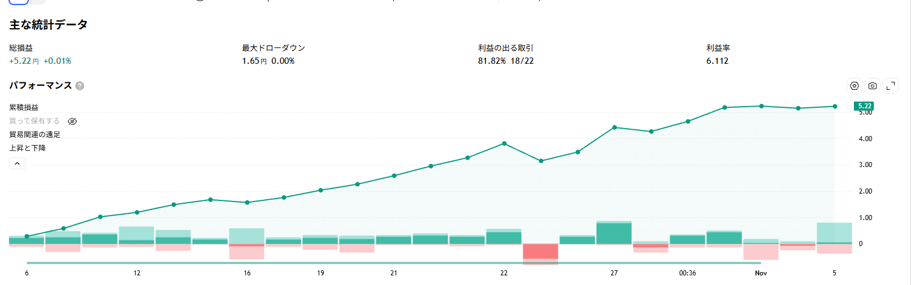

通算成績
ChartArt「Bollinger + RSI, Double Strategy」v1.1 の日本語表示版。ロジックは原本と同じで、矢印を「買い／売り」表示にして評価損益を円で出すようにしたもの。アラート2本（1時間足・3分足）が稼働中。いちばん新しい取引（買い・2026-11-03 16:48 建て）は建玉中のままで、評価損益は含み益・含み損で変わります。
総損益
+6.77 円
建玉中込み +6.83 円
利益率（PF）
4.640
建玉中込み 4.672
勝率
82.8%
24 勝 / 29 取引
最大ドローダウン
1.92 円
含み損も数えた谷
記録を始めてからためた全 30 取引の通算です（2026-09-29 〜 2026-11-03）。TradingView がさかのぼれる範囲から外れた古い取引も台帳に残してあるので消えません。最後に記録したのは 2026-11-05（2026-11-05 13:11 JST）。
通算の損益カーブ
決済が済んだ取引だけを、決済した順に積み上げたものです。線をなぞるとその取引が出ます。
トレード履歴（通算）
全 30 件（新しい順）
日時は上がエントリー・下が決済。小さい字は価格です。
| # | 方向 | 日時 | 損益 (円) | 累積 (円) |
|---|---|---|---|---|
| 30 | 買 | 11/03 16:48 ↓ 建玉中 157.799 → （未決済） | +0.06 | +6.83 |
| 29 | 売 | 11/02 09:33 ↓ 11/03 16:48 157.719 → 157.799 | -0.08 | +6.77 |
| 28 | 買 | 10/30 06:39 ↓ 11/02 09:33 157.668 → 157.719 | +0.05 | +6.85 |
| 27 | 売 | 10/29 00:36 ↓ 10/30 06:39 158.199 → 157.668 | +0.53 | +6.80 |
| 26 | 買 | 10/28 14:54 ↓ 10/29 00:36 157.816 → 158.199 | +0.38 | +6.27 |
| 25 | 売 | 10/27 11:00 ↓ 10/28 14:54 157.659 → 157.816 | -0.16 | +5.89 |
| 24 | 買 | 10/26 11:48 ↓ 10/27 11:00 156.721 → 157.659 | +0.94 | +6.05 |
| 23 | 売 | 10/26 10:03 ↓ 10/26 11:48 157.057 → 156.721 | +0.34 | +5.11 |
| 22 | 買 | 10/22 13:45 ↓ 10/26 10:03 157.719 → 157.057 | -0.66 | +4.77 |
| 21 | 売 | 10/22 04:18 ↓ 10/22 13:45 158.26 → 157.719 | +0.54 | +5.43 |
| 20 | 買 | 10/21 21:48 ↓ 10/22 04:18 157.942 → 158.26 | +0.32 | +4.89 |
| 19 | 売 | 10/21 10:09 ↓ 10/21 21:48 158.307 → 157.942 | +0.37 | +4.57 |
| 18 | 買 | 10/20 23:48 ↓ 10/21 10:09 157.983 → 158.307 | +0.32 | +4.20 |
| 17 | 売 | 10/19 19:18 ↓ 10/20 23:48 158.21 → 157.983 | +0.23 | +3.88 |
| 16 | 買 | 10/16 13:09 ↓ 10/19 19:18 157.935 → 158.21 | +0.28 | +3.65 |
| 15 | 売 | 10/16 00:42 ↓ 10/16 13:09 158.126 → 157.935 | +0.19 | +3.37 |
| 14 | 買 | 10/14 12:45 ↓ 10/16 00:42 158.234 → 158.126 | -0.11 | +3.18 |
| 13 | 売 | 10/14 10:36 ↓ 10/14 12:45 158.423 → 158.234 | +0.19 | +3.29 |
| 12 | 買 | 10/12 10:18 ↓ 10/14 10:36 158.128 → 158.423 | +0.30 | +3.10 |
| 11 | 売 | 10/09 01:09 ↓ 10/12 10:18 158.297 → 158.128 | +0.17 | +2.80 |
| 10 | 買 | 10/08 10:06 ↓ 10/09 01:09 157.858 → 158.297 | +0.44 | +2.63 |
| 9 | 売 | 10/06 15:45 ↓ 10/08 10:06 158.16 → 157.858 | +0.30 | +2.19 |
| 8 | 買 | 10/06 06:57 ↓ 10/06 15:45 157.879 → 158.16 | +0.28 | +1.89 |
| 7 | 売 | 10/05 13:54 ↓ 10/06 06:57 158.103 → 157.879 | +0.22 | +1.61 |
| 6 | 買 | 10/01 21:24 ↓ 10/05 13:54 158.003 → 158.103 | +0.10 | +1.39 |
| 5 | 売 | 10/01 00:30 ↓ 10/01 21:24 157.151 → 158.003 | -0.85 | +1.29 |
| 4 | 買 | 09/30 12:15 ↓ 10/01 00:30 156.644 → 157.151 | +0.51 | +2.14 |
| 3 | 売 | 09/30 00:36 ↓ 09/30 12:15 157.553 → 156.644 | +0.91 | +1.63 |
| 2 | 買 | 09/29 21:21 ↓ 09/30 00:36 157.169 → 157.553 | +0.38 | +0.72 |
| 1 | 売 | 09/29 14:09 ↓ 09/29 21:21 157.509 → 157.169 | +0.34 | +0.34 |
この日の TradingView 画面
取得日時 2026-11-05 13:11 JST
TradingView がこの日さかのぼれた範囲は 2026-10-06 〜 2026-11-03（23 取引）。その範囲だけで集計すると 総損益 +5.15 円 ／ 利益率 6.109。
上の通算と数字が違うのは、通算には窓から外れた古い取引も入っているからです。
戦略レポート（主な統計データと累積損益カーブ）

画像をタップすると原寸で開きます
日付ごとの記録
⚠️ 数字を読むときの注意
- 通算は「記録したときに TradingView に見えていた取引」を足したものです。記録を始める前の取引や、記録の間隔が開いて窓から外れてしまった取引は入りません
- 通算の総損益は1取引ごとの損益を足し上げた値です。TradingView の「累積損益」の列は行ごとに丸めてあるので、そちらとわずかに違います（いちばん新しい記録の範囲で 足し上げ +5.16 円 / TV の列 +5.15 円）
- TradingView の画面に出る「利益率」は建玉中の評価損益を含みません。いま建玉中が +0.06 円あり、含めると利益率は 4.640 → 4.672 になります
- 表の損益はスプレッドや実際の約定ズレを含みません。実口座の成績とは一致しません
- 最大ドローダウンは、決済ごとの累積損益に加えて保有中の含み損も谷として数えています。TradingView の表示と計算の土俵が違うことがあります
- この戦略は5分足6年の独立検証では利益率 0.924（ランダムに入った場合より悪い）でした。ここに出ている短期の高い利益率は、期間の取り方で出ることがあります
- 3分足は長期の裏取りができません（手持ちの検証データは最短5分足）
TradingView の戦略テスターから自動で作っています。取引一覧の原本（CSV）と通算台帳は非公開の保管用リポジトリにあります。